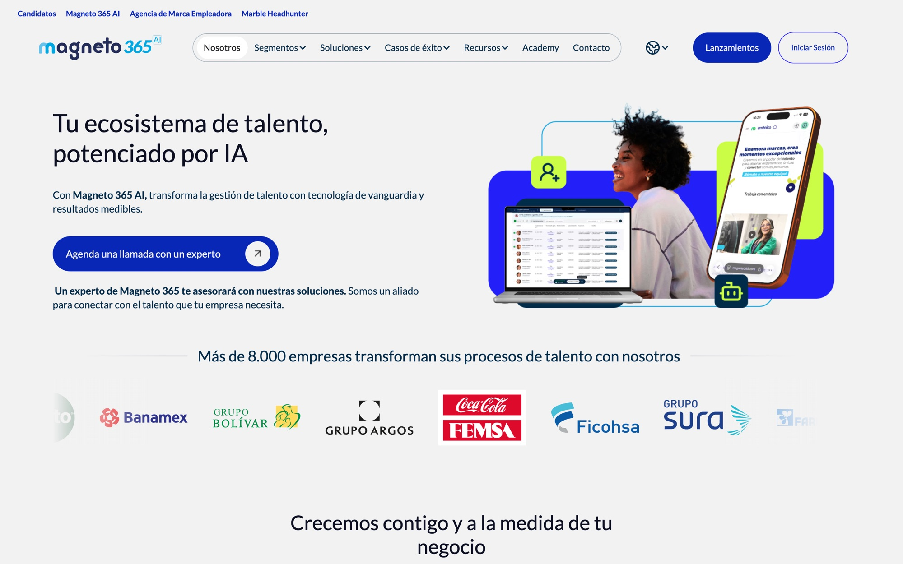
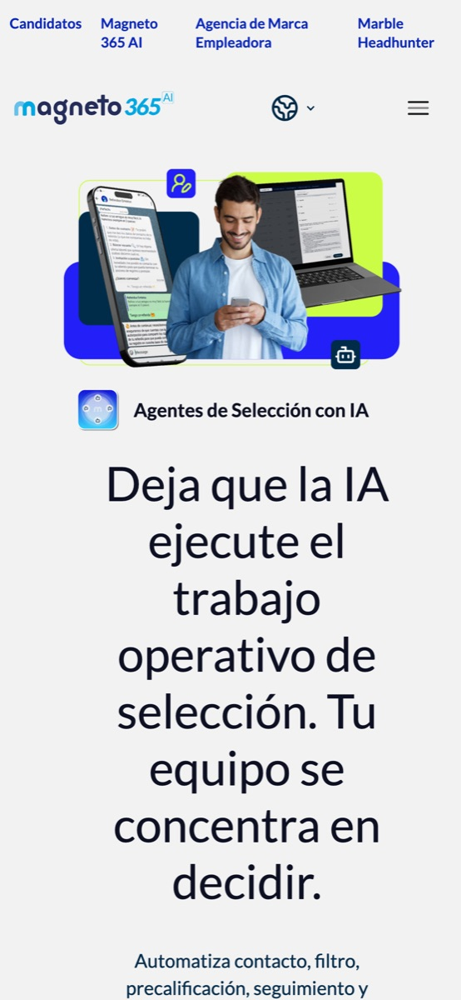

01 · MAGNETO 365
Un sitio, quince soluciones, una sola voz
Sistema de páginas en Webflow: la misma anatomía (etiqueta, titular, composición persona-mockup, tres beneficios) para que el sitio crezca sin perder coherencia en cuatro países.
- UX/UI
- Webflow
- Responsive
- Sistema de componentes